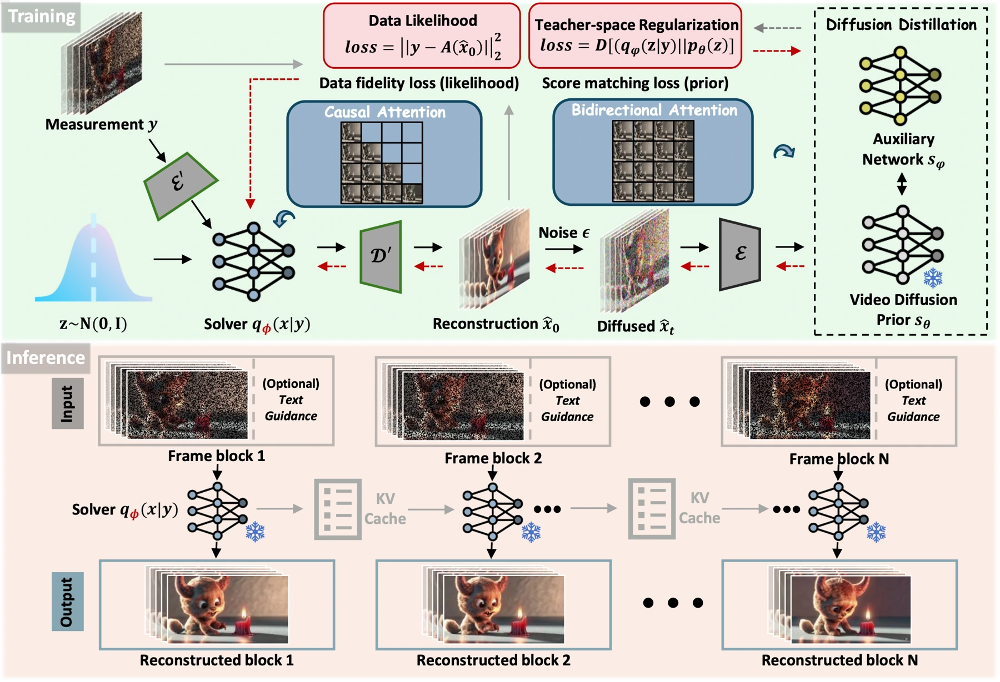
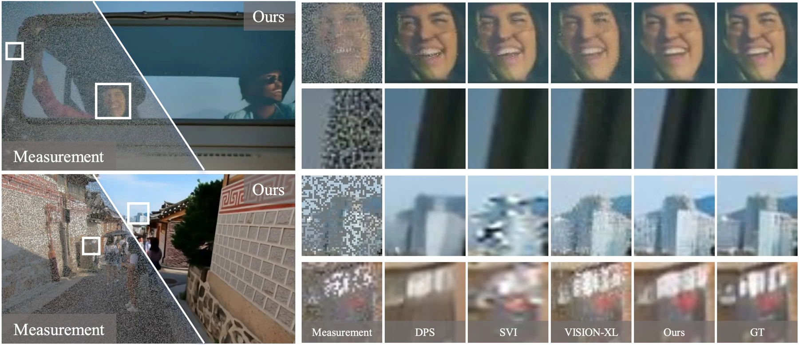

Restoring a video stream is an inverse problem with a deadline. You observe a degraded sequence and want the clean one, but the answer has to arrive before the next frames do — which rules out the methods that currently produce the best reconstructions.
恢复一段视频流是一个带截止时间的逆问题。你观测到一段退化序列，想要其中干净的那一段，但答案必须在下一批帧到来之前给出——这直接排除了当前重建质量最好的那批方法。
The two available options fail in specific ways. Adapting an image diffusion model frame by frame and adding a temporal regulariser produces flicker, because consistency is imposed after the fact rather than modelled. Using a native video diffusion model properly needs iterative posterior sampling, which is orders of magnitude too slow for streaming.
现有两种方案各有其具体的失败方式。逐帧套用图像扩散模型再补一个时间正则项会产生闪烁，因为一致性是在事后被强加的，而不是被建模出来的；而正确使用原生视频扩散模型需要迭代的后验采样，对流式场景来说慢了几个数量级。
InstantViR removes the iteration by moving it into training. A bidirectional video diffusion teacher is distilled into a causal autoregressive student that maps a degraded clip to a restored one in a single forward pass, reporting 35.56 FPS for the LeanVAE variant and up to 100× speedups over iterative solvers.
InstantViR 通过把迭代搬进训练阶段来消除它：一个双向视频扩散教师被蒸馏为一个因果自回归学生，单次前向即可把退化片段映射为恢复片段，LeanVAE 变体报告 35.56 FPS，相对迭代式求解器最高加速 100 倍。
Distillation rather than approximation: a bidirectional video diffusion teacher is distilled into a causal autoregressive student that restores in one forward pass, inheriting temporal modelling while removing iterative test-time optimisation.
是蒸馏而非近似：双向视频扩散教师被蒸馏为一个因果自回归学生，一次前向完成恢复，继承时间建模能力，同时去掉迭代式的测试时优化。
The distillation is prior-driven — it needs only the teacher and known degradation operators, with no externally paired clean/degraded video dataset. A forward model connects a candidate clean clip to the measurement it would have produced.
蒸馏由先验驱动：只需要教师模型与已知的退化算子，不需要外部配对的清晰／退化视频数据集。前向模型把候选的清晰片段连接到它本应产生的观测。
35.56 FPS for the LeanVAE variant and 13.91 FPS for the original-VAE model, measured on a single NVIDIA A800 80GB, with up to 100× speedups over iterative video diffusion solvers across inpainting, deblurring and super-resolution.
LeanVAE 变体 35.56 FPS、原始 VAE 模型 13.91 FPS，均在单张 NVIDIA A800 80GB 上测量；相对迭代式视频扩散求解器最高加速 100 倍，覆盖修复、去模糊与超分辨率。
Distilling iteration into a single pass把迭代蒸馏进一次前向
Teacher and student face different constraints. The teacher can look at the whole clip and use future frames when reconstructing the present; the student, running on a stream, cannot. Distillation transfers the teacher’s reconstruction behaviour into a form that respects that causality.
教师与学生面对不同的约束。教师可以看完整段片段，在重建当前帧时使用未来帧；而跑在流上的学生不能。蒸馏把教师的重建行为迁移成一种尊重这种因果性的形式。
The student is autoregressive over time, so each frame is produced from what has already arrived, while the training target comes from a model that had the luxury of bidirectional context. This is the standard reason to distill: the expensive model sets the target and the cheap model learns to hit it.
学生在时间上是自回归的，每一帧都由已经到达的内容生成，而训练目标则来自一个享有双向上下文特权的模型。这正是蒸馏的标准理由：昂贵的模型负责设定目标，便宜的模型学会命中它。
LeanVAE addresses the cost that remains once iteration is gone. Even a single pass through a video diffusion model spends much of its time encoding and decoding latents, so replacing the backbone VAE with a lighter one — through teacher-space regularised distillation — is where a further roughly 2.5× of throughput comes from.
LeanVAE 解决的是迭代消除之后仍然剩下的那部分成本。即使只做一次前向，视频扩散模型也有大量时间花在潜变量的编码与解码上；因此用更轻的 VAE 替换骨干 VAE——通过教师空间正则化的蒸馏——才是那额外约 2.5 倍吞吐的来源。


Supervision from the forward operator来自前向算子的监督
Amortised restoration usually needs pairs: a clean video and its degraded version, collected or synthesised. InstantViR avoids them by using known degradation operators instead — inpainting masks, blur kernels, downsampling — which can be applied to any candidate clean video to produce the measurement it should have yielded.
摊还式恢复通常需要配对数据：一段清晰视频及其退化版本，或采集或合成。InstantViR 改用已知的退化算子来避开这一点——修复掩膜、模糊核、下采样——它们可以施加到任意候选清晰视频上，产出它本应产生的观测。
That turns training into a consistency requirement. The student proposes a clean clip, the known forward operator predicts what the sensor would have recorded, and the discrepancy is the training signal. No external paired data is needed and the inverse problem stays explicit rather than being folded into a learned prior.
这把训练变成了一致性要求：学生提出一段清晰片段，已知的前向算子预测传感器本会记录下什么，两者之差就是训练信号。既不需要外部配对数据，逆问题也保持显式，而没有被折叠进一个学到的先验里。
The trade is scope. Known operators cover degradations you can write down, which is most of what capture and streaming pipelines produce. Degradations that are not modelled — an unknown sensor pipeline, codec artifacts — lie outside what the student was trained to invert.
代价是适用范围。已知算子覆盖的是那些你能写下来的退化，而这正是采集与流式流水线所产生的大多数情况。未被建模的退化——未知的传感器流水线、编码伪影——则落在学生被训练去求逆的范围之外。
Throughput, and what it depends on吞吐量，以及它依赖什么
Training uses 6,000 Open-Sora clips with measurements generated through known forward operators; evaluation uses 500 held-out clips plus REDS30 for zero-shot transfer, covering random inpainting, Gaussian deblurring and 4× super-resolution at 832×480.
训练使用 6,000 个 Open-Sora 片段，观测由已知前向算子生成；评测使用 500 个留出片段，并以 REDS30 检验零样本迁移，覆盖随机修复、高斯去模糊与 832×480 的 4× 超分辨率。
The paper measures per-frame fidelity, perceptual quality, temporal distribution and throughput, and reports the original-VAE model separately from the LeanVAE variant — 13.91 and 35.56 FPS on a single NVIDIA A800 80GB. Reporting both is what makes the number usable.
论文测量逐帧保真度、感知质量、时间分布与吞吐量，并把原始 VAE 模型与 LeanVAE 变体分开报告——单张 NVIDIA A800 80GB 上分别为 13.91 与 35.56 FPS。同时报出两者，这个数字才可用。
Across the three tasks the one-step approach matches or surpasses diffusion baselines on the reported temporal and reconstruction measures. That is the substantive result: the speedup is not bought with a large quality drop, because the student inherits the teacher’s prior rather than approximating it from scratch.
在三项任务上，一步式方法在所报的时间与重建指标上达到或超过扩散基线。这才是实质结果：加速并不是用大幅掉质量换来的，因为学生继承的是教师的先验，而不是从零去近似它。


Real time is a property of a setup实时是一整套配置的属性
Distillation moves iterative work from serving time into training time. That is the right trade when many clips share a known restoration task, and a worse one when the degradation changes often or when inputs fall outside the training distribution.
蒸馏把迭代工作从服务阶段搬到了训练阶段。当大量片段共享同一个已知恢复任务时，这是正确的取舍；而当退化频繁变化、或输入落在训练分布之外时，这个取舍就变差了。
The throughput figure also needs its conditions attached. Model variant, resolution and hardware all move it, and 832×480 on one accelerator is a specific operating point — quoting frames per second without those is why real-time claims are so hard to compare across papers.
吞吐量数字也必须附带它的条件。模型变体、分辨率与硬件都会改变它，而在一张加速卡上跑 832×480 是一个具体的运行点——脱离这些条件只报帧率，正是各篇论文的“实时”宣称难以相互比较的原因。
The interesting consequence is what becomes possible rather than what gets faster. At tens of frames per second, diffusion-quality restoration fits into interactive and editable streaming pipelines — telepresence, AR/VR, live capture — where an iterative solver was never a candidate regardless of its quality.
有意思的后果在于什么变得可能，而不只是什么变得更快。在每秒几十帧的水平上，扩散质量的恢复得以进入交互式、可编辑的流式流水线——远程呈现、AR/VR、实时采集——而在这些场景里，迭代式求解器无论质量多高都从来不是候选。
Paper & authors
InstantViR: Real-Time Video Inverse Problem Solver with Distilled Diffusion Prior
CVPR 2026 Highlight
Cite this work
@misc{bai2025instantvirrealtimevideoinverse,
title = {InstantViR: Real-Time Video Inverse Problem Solver with Distilled Diffusion Prior},
author = {Weimin Bai
and Suzhe Xu
and Yiwei Ren
and Jinhua Hao
and Ming Sun
and Wenzheng Chen
and He Sun},
year = {2025},
eprint = {2511.14208},
archivePrefix = {arXiv},
primaryClass = {cs.CV},
url = {https://arxiv.org/abs/2511.14208}
}